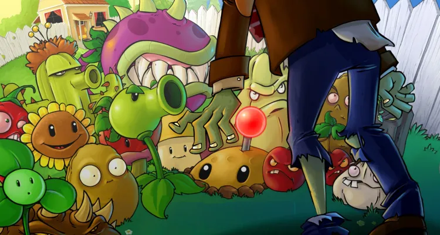
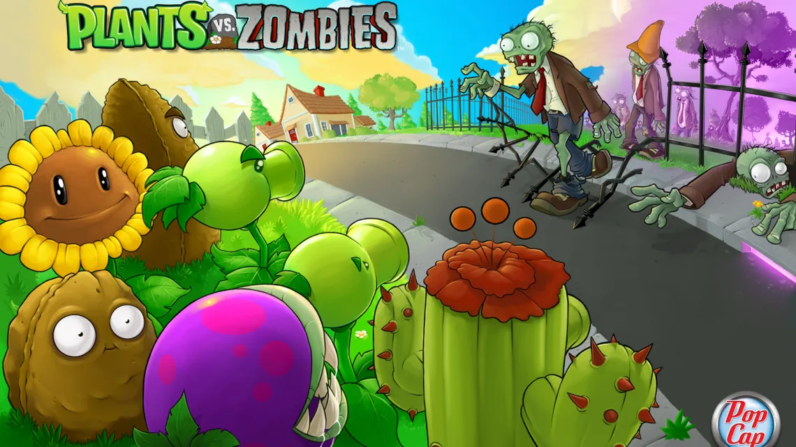
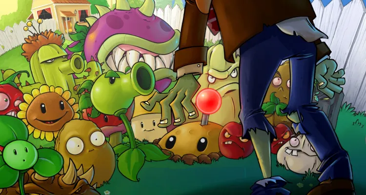
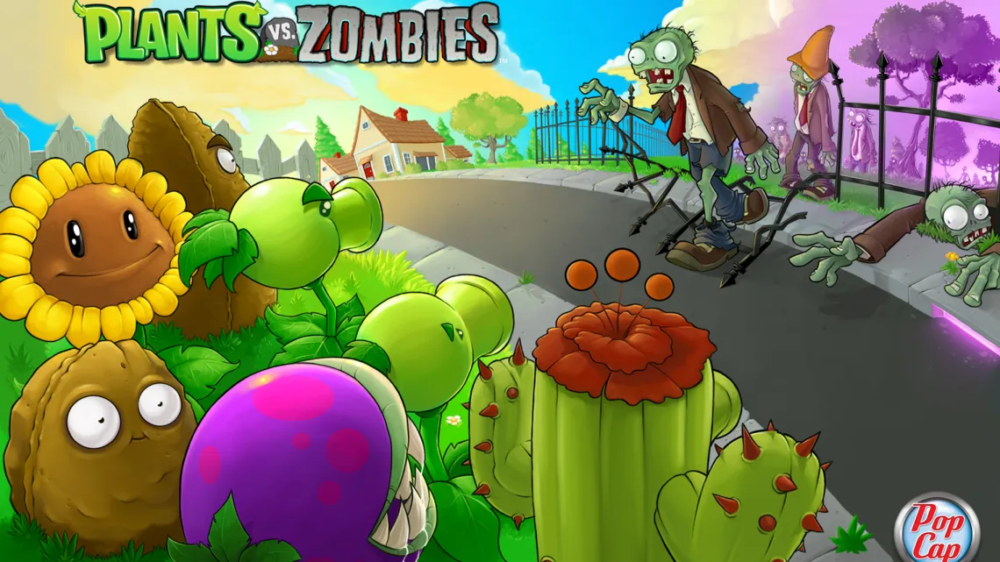

Historia
Plantas contra Zombis fue diseñado por George Fan, quien lo conceptualizó como una secuela más orientada a la defensa de su juego de simulador de peces Insaniquarium (2001), y luego lo desarrolló hasta convertirlo en un juego de defensa de torres en el que las plantas luchan contra zombies.Se necesitaron tres años y medio para hacer Plantas contra Zombis. Rich Werner fue el artista principal, Tod Semple programó el juego y Laura Shigihara compuso la música del juego.
Plantas contra Zombis fue recibido positivamente por la crítica y fue nominado a múltiples premios, incluidos «Juego de descarga del año» y «Juego de estrategia del año» como parte de los Golden Joystick Awards 2010.


 


